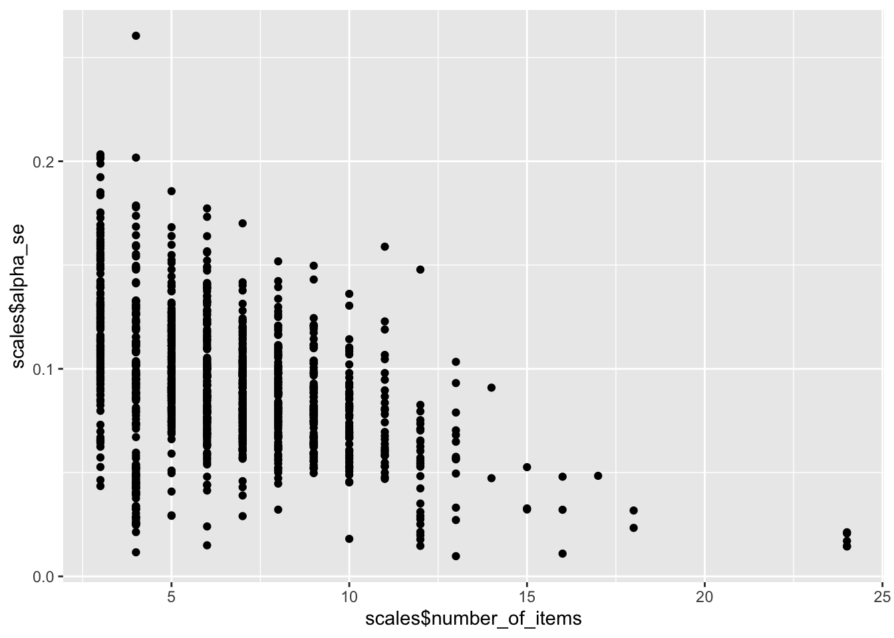

The following precision simulations all follow the same
structure.
We begin with item correlations, then reliabilities, then scale
correlations.
Precision simulation for synthetic inter-item correlations
holdout <- arrow::read_feather(file = file.path(data_path, glue("ignore.{model_name}.raw.osf-bainbridge-2021-s2-0.item_correlations.feather")))
holdout_mapping_data = arrow::read_feather(
file = file.path(data_path, glue("{model_name}.raw.osf-bainbridge-2021-s2-0.mapping2.feather"))
) %>%
rename(scale_0 = scale0,
scale_1 = scale1)
scales <- arrow::read_feather(file.path(data_path, glue("{model_name}.raw.osf-bainbridge-2021-s2-0.scales.feather"))
)
holdout_llm <- holdout %>%
left_join(holdout_mapping_data %>% select(variable_1 = variable, InstrumentA = instrument, ScaleA = scale_0, SubscaleA = scale_1)) %>%
left_join(holdout_mapping_data %>% select(variable_2 = variable, InstrumentA = instrument, ScaleA = scale_0, SubscaleA = scale_1))
## Joining with `by = join_by(variable_1)`
## Joining with `by = join_by(variable_2, InstrumentA, ScaleA, SubscaleA)`
sim_results <- tibble()
library(lavaan)
for(i in 1:500) {
items <- holdout %>% select(variable_1) %>% distinct() %>% sample_n(175) %>% pull(variable_1)
subset <- holdout %>% filter(variable_1 %in% items, variable_2 %in% items)
N <- planned_N
subset <- subset %>% mutate(se = (1 - empirical_r^2)/sqrt(N - 2))
se2 <- mean(subset$se^2)
r <- broom::tidy(cor.test(subset$empirical_r, subset$synthetic_r))
model <- paste0('
# Latent variables
PearsonLatent =~ 1*empirical_r
# Fixing error variances based on known standard errors
empirical_r ~~ ',se2,'*empirical_r
# Relationship between latent variables
PearsonLatent ~~ synthetic_r
')
fit <- sem(model, data = subset)
sim_results <- bind_rows(sim_results,
standardizedsolution(fit) %>% filter(lhs == "PearsonLatent", rhs == "synthetic_r")
)
}
sim_results %>% summarise(semi_latent_r = mean(est.std), mean_se = sqrt(mean(se^2)), max_se = max(se))
## # A tibble: 1 × 3
## semi_latent_r mean_se max_se
## <dbl> <dbl> <dbl>
## 1 0.706 0.00447 0.00529
Precision simulation for synthetic reliabilities
cors_llm <- holdout_llm %>%
select(x = variable_1, y = variable_2, r = synthetic_r) %>%
as.data.frame() |>
igraph::graph_from_data_frame(directed = FALSE) |>
igraph::as_adjacency_matrix(attr = "r", sparse = FALSE)
diag(cors_llm) <- 1
cors_real <- holdout_llm %>%
select(x = variable_1, y = variable_2, r = empirical_r) %>%
as.data.frame() |>
igraph::graph_from_data_frame(directed = FALSE) |>
igraph::as_adjacency_matrix(attr = "r", sparse = FALSE)
diag(cors_real) <- 1
mapping_data <- holdout_mapping_data
items_by_scale <- bind_rows(
scales %>% filter(scale_1 == "") %>% left_join(mapping_data %>% select(-scale_1), by = c("instrument", "scale_0")),
scales %>% filter(scale_1 != "") %>% left_join(mapping_data, by = c("instrument", "scale_0", "scale_1"))
)
n_distinct(scales$scale)
## [1] 113
scales <- items_by_scale %>%
group_by(keyed, scale) %>%
summarise(
items = list(variable),
number_of_items = n_distinct(variable),
lvn = paste(first(scale), " =~ ", paste(variable, collapse = " + "))) %>%
drop_na() %>%
ungroup()
## `summarise()` has grouped output by 'keyed'. You can override using the
## `.groups` argument.
random_scales <- list()
for(i in 1:1000) {
n_items <- rpois(1, mean(scales$number_of_items))
n_items <- if_else(n_items < 3, 3, n_items)
random_scales[[i]] <- holdout_mapping_data %>%
sample_n(n_items) %>%
mutate(scale = paste0("random", i)) %>%
group_by(scale) %>%
summarise(
items = list(variable),
number_of_items = n_distinct(variable),
lvn = paste(first(scale), " =~ ", paste(variable, collapse = " + "))) %>%
drop_na() %>%
mutate(keyed = 1)
}
random_scales <- bind_rows(random_scales)
scales <- bind_rows(scales, random_scales)
n_distinct(scales$scale)
## [1] 1113
source("global_functions.R")
scales <- scales %>% filter(number_of_items >= 3)
scales <- scales %>%
rowwise() %>%
mutate(r_real = list(cors_real[items, items]),
r_llm = list(cors_llm[items, items])) %>%
mutate(reverse_items = list(find_reverse_items_by_first_item(r_real, keyed)),
r_real_rev = list(reverse_items(r_real, reverse_items)),
r_llm_rev = list(reverse_items(r_llm, reverse_items))) %>%
mutate(
rel_real = list(psych::alpha(r_real_rev, keys = F, n.obs = planned_N)$feldt)) %>%
mutate(
rel_llm = list(psych::alpha(r_llm_rev, keys = F, n.obs = planned_N)$feldt)) %>%
mutate(rel_real_alpha = rel_real$alpha$raw_alpha,
rel_llm_alpha = rel_llm$alpha$raw_alpha) %>%
mutate(
alpha_se = mean(diff(unlist(psychometric::alpha.CI(rel_real_alpha, k = number_of_items, N = planned_N, level = 0.95))))
)
## Warning: There were 12 warnings in `mutate()`.
## The first warning was:
## ℹ In argument: `rel_real = list(psych::alpha(r_real_rev, keys = F, n.obs =
## planned_N)$feldt)`.
## ℹ In row 132.
## Caused by warning in `sqrt()`:
## ! NaNs produced
## ℹ Run `dplyr::last_dplyr_warnings()` to see the 11 remaining warnings.
## Warning: There were 67 warnings in `mutate()`.
## The first warning was:
## ℹ In argument: `rel_llm = list(psych::alpha(r_llm_rev, keys = F, n.obs =
## planned_N)$feldt)`.
## ℹ In row 63.
## Caused by warning in `sqrt()`:
## ! NaNs produced
## ℹ Run `dplyr::last_dplyr_warnings()` to see the 66 remaining warnings.
## Warning: `qplot()` was deprecated in ggplot2 3.4.0.
## This warning is displayed once every 8 hours.
## Call `lifecycle::last_lifecycle_warnings()` to see where this warning was
## generated.
## `stat_bin()` using `bins = 30`. Pick better value with `binwidth`.
qplot(scales$rel_real_alpha, scales$alpha_se)
qplot(scales$number_of_items, scales$alpha_se)

qplot(scales$rel_real_alpha, scales$alpha_se, color = scales$number_of_items)
realistic_scales <- scales %>% ungroup()
sim_results <- tibble()
for(i in 1:500) {
picked_scales <- realistic_scales %>% filter(!str_detect(scale, "random")) %>% sample_n(number_of_scales)
subset <-
bind_rows(picked_scales,
realistic_scales %>% filter(str_detect(scale, "random")) %>% sample_n(200)
)
se2 <- mean(subset$alpha_se^2)
r <- broom::tidy(cor.test(subset$rel_real_alpha, subset$rel_llm_alpha))
(r$conf.high - r$conf.low)/2
model <- paste0('
# Latent variables
PearsonLatent =~ 1*rel_real_alpha
# Fixing error variances based on known standard errors
rel_real_alpha ~~ ',se2,'*rel_real_alpha
# Relationship between latent variables
PearsonLatent ~~ rel_llm_alpha
')
fit <- sem(model, data = subset)
sim_results <- bind_rows(sim_results,
standardizedsolution(fit) %>% filter(lhs == "PearsonLatent", rhs == "rel_llm_alpha")
)
}
sim_results %>% summarise(semi_latent_r = mean(est.std), mean_se = sqrt(mean(se^2)), max_se = max(se))
## # A tibble: 1 × 3
## semi_latent_r mean_se max_se
## <dbl> <dbl> <dbl>
## 1 0.890 0.0219 0.0317
#
# scales %>% group_by(number_of_items) %>%
# summarise(cor(rel_real_alpha, rel_llm_alpha), n())
LS0tCnRpdGxlOiAiUHJlY2lzaW9uIHNpbXVsYXRpb25zIgphdXRob3I6ICJSdWJlbiBBcnNsYW4iCmRhdGU6ICIyMDIzLTExLTA3IgpvdXRwdXQ6IGh0bWxfZG9jdW1lbnQKLS0tCgoKVGhlIGZvbGxvd2luZyBwcmVjaXNpb24gc2ltdWxhdGlvbnMgYWxsIGZvbGxvdyB0aGUgc2FtZSBzdHJ1Y3R1cmUuCgotIFdlIHJhbmRvbWx5IHJlZHJhdyBmcm9tIG91ciBob2xkb3V0IGRhdGEgdG8gZ2V0IHJlYWxpc3RpYyBkaXN0cmlidXRpb25zCiAgb2YgZW1waXJpY2FsIGVzdGltYXRlcy4gU0VzIGFyZSBlc3RpbWF0ZWQgYmFzZWQgb24gb3VyIHBsYW5uZWQgTiBvZiA0MDAuCi0gV2UgcmVwZWF0IHRoaXMgcmFuZG9tIGRyYXdpbmcgcHJvY2VzcyBtYW55IHRpbWVzLgotIFdlIGFkanVzdCBmb3Igc2FtcGxpbmcgZXJyb3IvdGhlIHN0YW5kYXJkIGVycm9yIG9mIHRoZSBlbXBpcmljYWwgZXN0aW1hdGUgdG8gZ2V0IHRoZSBzZW1pLWxhdGVudCBhY2N1cmFjeS4KLSBUaGUgdGFyZ2V0IHF1YW50aXR5IGlzIHRoZSBhdmVyYWdlIHN0YW5kYXJkIGVycm9yIG9mIHRoZSBzZW1pLWxhdGVudCBhY2N1cmFjeSB3aXRoIHdoaWNoIHRoZSBzeW50aGV0aWMgZXN0aW1hdGVzIHByZWRpY3RzIHRoZSBlbXBpcmljYWwgZXN0aW1hdGVzLiBXZSBhbHNvIHJlcG9ydCB0aGUgbWF4aW1hbCBzdGFuZGFyZCBlcnJvciBhY3Jvc3Mgc2ltdWxhdGlvbnMuCgpXZSBiZWdpbiB3aXRoIGl0ZW0gY29ycmVsYXRpb25zLCB0aGVuIHJlbGlhYmlsaXRpZXMsIHRoZW4gc2NhbGUgY29ycmVsYXRpb25zLgoKYGBge3Igd2FybmluZz1GLG1lc3NhZ2U9Rn0Ka25pdHI6Om9wdHNfY2h1bmskc2V0KGVjaG8gPSBUUlVFLCBlcnJvciA9IFQpCgojIExpYnJhcmllcyBhbmQgU2V0dGluZ3MKCiMgTGlicyAtLS0tLS0tLS0tLS0tLS0tLS0tLS0tLS0tLS0KbGlicmFyeSh0aWR5dmVyc2UpCmxpYnJhcnkoYXJyb3cpCmxpYnJhcnkoZ2x1ZSkKbGlicmFyeShwc3ljaCkKbGlicmFyeShsYXZhYW4pCmxpYnJhcnkoZ2dwbG90MikKbGlicmFyeShwbG90bHkpCmxpYnJhcnkoZ3JpZEV4dHJhKQpsaWJyYXJ5KHNlbVRvb2xzKQpsaWJyYXJ5KHNlbVBsb3QpCgptb2RlbF9uYW1lID0gIkl0ZW1TaW1pbGFyaXR5VHJhaW5pbmctMjAyNDA1MDItdHJpYWwxMiIKI21vZGVsX25hbWUgPSAiaXRlbS1zaW1pbGFyaXR5LTIwMjMxMDE4LTEyMjUwNCIKcHJldHJhaW5lZF9tb2RlbF9uYW1lID0gImFsbC1tcG5ldC1iYXNlLXYyIgoKZGF0YV9wYXRoID0gZ2x1ZSgiLi8iKQpwcmV0cmFpbmVkX2RhdGFfcGF0aCA9IGdsdWUoIi4vIikKCnNldC5zZWVkKDQyKQoKbnVtYmVyX29mX2l0ZW1zIDwtIDE3NQpudW1iZXJfb2Zfc2NhbGVzIDwtIDQwCmNvbWJpbmF0aW9uc19pdGVtcyA8LSBjaG9vc2UobnVtYmVyX29mX2l0ZW1zLCAyKQpjb21iaW5hdGlvbnNfc2NhbGVzIDwtIGNob29zZShudW1iZXJfb2Zfc2NhbGVzLCAyKQpwbGFubmVkX04gPC0gNDAwCmBgYAoKCiMjIFByZWNpc2lvbiBzaW11bGF0aW9uIGZvciBzeW50aGV0aWMgaW50ZXItaXRlbSBjb3JyZWxhdGlvbnMKYGBge3J9CmhvbGRvdXQgPC0gYXJyb3c6OnJlYWRfZmVhdGhlcihmaWxlID0gZmlsZS5wYXRoKGRhdGFfcGF0aCwgZ2x1ZSgiaWdub3JlLnttb2RlbF9uYW1lfS5yYXcub3NmLWJhaW5icmlkZ2UtMjAyMS1zMi0wLml0ZW1fY29ycmVsYXRpb25zLmZlYXRoZXIiKSkpCgpob2xkb3V0X21hcHBpbmdfZGF0YSA9IGFycm93OjpyZWFkX2ZlYXRoZXIoCiAgZmlsZSA9IGZpbGUucGF0aChkYXRhX3BhdGgsIGdsdWUoInttb2RlbF9uYW1lfS5yYXcub3NmLWJhaW5icmlkZ2UtMjAyMS1zMi0wLm1hcHBpbmcyLmZlYXRoZXIiKSkKKSAlPiUKICByZW5hbWUoc2NhbGVfMCA9IHNjYWxlMCwKICAgICAgICAgc2NhbGVfMSA9IHNjYWxlMSkKCnNjYWxlcyA8LSBhcnJvdzo6cmVhZF9mZWF0aGVyKGZpbGUucGF0aChkYXRhX3BhdGgsIGdsdWUoInttb2RlbF9uYW1lfS5yYXcub3NmLWJhaW5icmlkZ2UtMjAyMS1zMi0wLnNjYWxlcy5mZWF0aGVyIikpCikKCmhvbGRvdXRfbGxtIDwtIGhvbGRvdXQgJT4lCiAgbGVmdF9qb2luKGhvbGRvdXRfbWFwcGluZ19kYXRhICU+JSBzZWxlY3QodmFyaWFibGVfMSA9IHZhcmlhYmxlLCBJbnN0cnVtZW50QSA9IGluc3RydW1lbnQsIFNjYWxlQSA9IHNjYWxlXzAsIFN1YnNjYWxlQSA9IHNjYWxlXzEpKSAlPiUKICBsZWZ0X2pvaW4oaG9sZG91dF9tYXBwaW5nX2RhdGEgJT4lIHNlbGVjdCh2YXJpYWJsZV8yID0gdmFyaWFibGUsIEluc3RydW1lbnRBID0gaW5zdHJ1bWVudCwgU2NhbGVBID0gc2NhbGVfMCwgU3Vic2NhbGVBID0gc2NhbGVfMSkpCgpzaW1fcmVzdWx0cyA8LSB0aWJibGUoKQpsaWJyYXJ5KGxhdmFhbikKCmZvcihpIGluIDE6NTAwKSB7CiAgaXRlbXMgPC0gaG9sZG91dCAlPiUgc2VsZWN0KHZhcmlhYmxlXzEpICU+JSBkaXN0aW5jdCgpICU+JSBzYW1wbGVfbigxNzUpICU+JSBwdWxsKHZhcmlhYmxlXzEpCgogIHN1YnNldCA8LSBob2xkb3V0ICU+JSBmaWx0ZXIodmFyaWFibGVfMSAlaW4lIGl0ZW1zLCB2YXJpYWJsZV8yICVpbiUgaXRlbXMpCgogIE4gPC0gcGxhbm5lZF9OCiAgc3Vic2V0IDwtIHN1YnNldCAlPiUgbXV0YXRlKHNlID0gKDEgLSBlbXBpcmljYWxfcl4yKS9zcXJ0KE4gLSAyKSkKICBzZTIgPC0gbWVhbihzdWJzZXQkc2VeMikKCiAgciA8LSBicm9vbTo6dGlkeShjb3IudGVzdChzdWJzZXQkZW1waXJpY2FsX3IsIHN1YnNldCRzeW50aGV0aWNfcikpCgogIG1vZGVsIDwtIHBhc3RlMCgnCiAgICAjIExhdGVudCB2YXJpYWJsZXMKICAgIFBlYXJzb25MYXRlbnQgPX4gMSplbXBpcmljYWxfcgoKICAgICMgRml4aW5nIGVycm9yIHZhcmlhbmNlcyBiYXNlZCBvbiBrbm93biBzdGFuZGFyZCBlcnJvcnMKICAgIGVtcGlyaWNhbF9yIH5+ICcsc2UyLCcqZW1waXJpY2FsX3IKCiAgICAjIFJlbGF0aW9uc2hpcCBiZXR3ZWVuIGxhdGVudCB2YXJpYWJsZXMKICAgIFBlYXJzb25MYXRlbnQgfn4gc3ludGhldGljX3IKICAnKQoKICBmaXQgPC0gc2VtKG1vZGVsLCBkYXRhID0gc3Vic2V0KQoKICBzaW1fcmVzdWx0cyA8LSBiaW5kX3Jvd3Moc2ltX3Jlc3VsdHMsCiAgICBzdGFuZGFyZGl6ZWRzb2x1dGlvbihmaXQpICU+JSBmaWx0ZXIobGhzID09ICJQZWFyc29uTGF0ZW50IiwgcmhzID09ICAic3ludGhldGljX3IiKQogICkKfQoKc2ltX3Jlc3VsdHMgJT4lIHN1bW1hcmlzZShzZW1pX2xhdGVudF9yID0gbWVhbihlc3Quc3RkKSwgbWVhbl9zZSA9IHNxcnQobWVhbihzZV4yKSksIG1heF9zZSA9IG1heChzZSkpCmBgYAoKCiMjIFByZWNpc2lvbiBzaW11bGF0aW9uIGZvciBzeW50aGV0aWMgcmVsaWFiaWxpdGllcwpgYGB7cn0KY29yc19sbG0gPC0gaG9sZG91dF9sbG0gJT4lCiAgc2VsZWN0KHggPSB2YXJpYWJsZV8xLCB5ID0gdmFyaWFibGVfMiwgciA9IHN5bnRoZXRpY19yKSAlPiUKICBhcy5kYXRhLmZyYW1lKCkgfD4KICBpZ3JhcGg6OmdyYXBoX2Zyb21fZGF0YV9mcmFtZShkaXJlY3RlZCA9IEZBTFNFKSB8PgogIGlncmFwaDo6YXNfYWRqYWNlbmN5X21hdHJpeChhdHRyID0gInIiLCBzcGFyc2UgPSBGQUxTRSkKZGlhZyhjb3JzX2xsbSkgPC0gMQoKY29yc19yZWFsIDwtIGhvbGRvdXRfbGxtICU+JQogIHNlbGVjdCh4ID0gdmFyaWFibGVfMSwgeSA9IHZhcmlhYmxlXzIsIHIgPSBlbXBpcmljYWxfcikgJT4lCiAgYXMuZGF0YS5mcmFtZSgpIHw+CiAgaWdyYXBoOjpncmFwaF9mcm9tX2RhdGFfZnJhbWUoZGlyZWN0ZWQgPSBGQUxTRSkgfD4KICBpZ3JhcGg6OmFzX2FkamFjZW5jeV9tYXRyaXgoYXR0ciA9ICJyIiwgc3BhcnNlID0gRkFMU0UpCmRpYWcoY29yc19yZWFsKSA8LSAxCgptYXBwaW5nX2RhdGEgPC0gaG9sZG91dF9tYXBwaW5nX2RhdGEKaXRlbXNfYnlfc2NhbGUgPC0gYmluZF9yb3dzKAogIHNjYWxlcyAlPiUgZmlsdGVyKHNjYWxlXzEgPT0gIiIpICU+JSBsZWZ0X2pvaW4obWFwcGluZ19kYXRhICU+JSBzZWxlY3QoLXNjYWxlXzEpLCBieSA9IGMoImluc3RydW1lbnQiLCAic2NhbGVfMCIpKSwKICBzY2FsZXMgJT4lIGZpbHRlcihzY2FsZV8xICE9ICIiKSAlPiUgbGVmdF9qb2luKG1hcHBpbmdfZGF0YSwgYnkgPSBjKCJpbnN0cnVtZW50IiwgInNjYWxlXzAiLCAic2NhbGVfMSIpKQopCiAgCm5fZGlzdGluY3Qoc2NhbGVzJHNjYWxlKQoKc2NhbGVzIDwtIGl0ZW1zX2J5X3NjYWxlICU+JQogIGdyb3VwX2J5KGtleWVkLCBzY2FsZSkgJT4lCiAgc3VtbWFyaXNlKAogICAgaXRlbXMgPSBsaXN0KHZhcmlhYmxlKSwKICAgIG51bWJlcl9vZl9pdGVtcyA9IG5fZGlzdGluY3QodmFyaWFibGUpLAogICAgbHZuID0gcGFzdGUoZmlyc3Qoc2NhbGUpLCAiID1+ICIsIHBhc3RlKHZhcmlhYmxlLCBjb2xsYXBzZSA9ICIgKyAiKSkpICU+JQogIGRyb3BfbmEoKSAlPiUgCiAgdW5ncm91cCgpCgpyYW5kb21fc2NhbGVzIDwtIGxpc3QoKQpmb3IoaSBpbiAxOjEwMDApIHsKICBuX2l0ZW1zIDwtIHJwb2lzKDEsIG1lYW4oc2NhbGVzJG51bWJlcl9vZl9pdGVtcykpCiAgbl9pdGVtcyA8LSBpZl9lbHNlKG5faXRlbXMgPCAzLCAzLCBuX2l0ZW1zKQogIHJhbmRvbV9zY2FsZXNbW2ldXSA8LSBob2xkb3V0X21hcHBpbmdfZGF0YSAlPiUKICAgIHNhbXBsZV9uKG5faXRlbXMpICU+JQogICAgbXV0YXRlKHNjYWxlID0gcGFzdGUwKCJyYW5kb20iLCBpKSkgJT4lCiAgICBncm91cF9ieShzY2FsZSkgJT4lCiAgICBzdW1tYXJpc2UoCiAgICAgIGl0ZW1zID0gbGlzdCh2YXJpYWJsZSksCiAgICAgIG51bWJlcl9vZl9pdGVtcyA9IG5fZGlzdGluY3QodmFyaWFibGUpLAogICAgICBsdm4gPSBwYXN0ZShmaXJzdChzY2FsZSksICIgPX4gIiwgcGFzdGUodmFyaWFibGUsIGNvbGxhcHNlID0gIiArICIpKSkgJT4lCiAgICBkcm9wX25hKCkgJT4lIAogICAgbXV0YXRlKGtleWVkID0gMSkKfQoKcmFuZG9tX3NjYWxlcyA8LSBiaW5kX3Jvd3MocmFuZG9tX3NjYWxlcykKc2NhbGVzIDwtIGJpbmRfcm93cyhzY2FsZXMsIHJhbmRvbV9zY2FsZXMpCm5fZGlzdGluY3Qoc2NhbGVzJHNjYWxlKQoKc291cmNlKCJnbG9iYWxfZnVuY3Rpb25zLlIiKQoKc2NhbGVzIDwtIHNjYWxlcyAlPiUgZmlsdGVyKG51bWJlcl9vZl9pdGVtcyA+PSAzKQoKc2NhbGVzIDwtIHNjYWxlcyAlPiUKICByb3d3aXNlKCkgJT4lCiAgbXV0YXRlKHJfcmVhbCA9IGxpc3QoY29yc19yZWFsW2l0ZW1zLCBpdGVtc10pLAogICAgICAgICByX2xsbSA9IGxpc3QoY29yc19sbG1baXRlbXMsIGl0ZW1zXSkpICU+JQogIG11dGF0ZShyZXZlcnNlX2l0ZW1zID0gbGlzdChmaW5kX3JldmVyc2VfaXRlbXNfYnlfZmlyc3RfaXRlbShyX3JlYWwsIGtleWVkKSksCiAgICAgICAgIHJfcmVhbF9yZXYgPSBsaXN0KHJldmVyc2VfaXRlbXMocl9yZWFsLCByZXZlcnNlX2l0ZW1zKSksCiAgICAgICAgIHJfbGxtX3JldiA9IGxpc3QocmV2ZXJzZV9pdGVtcyhyX2xsbSwgcmV2ZXJzZV9pdGVtcykpKSAlPiUKICBtdXRhdGUoCiAgICByZWxfcmVhbCA9IGxpc3QocHN5Y2g6OmFscGhhKHJfcmVhbF9yZXYsIGtleXMgPSBGLCBuLm9icyA9IHBsYW5uZWRfTikkZmVsZHQpKSAlPiUKICBtdXRhdGUoCiAgICByZWxfbGxtID0gbGlzdChwc3ljaDo6YWxwaGEocl9sbG1fcmV2LCBrZXlzID0gRiwgbi5vYnMgPSBwbGFubmVkX04pJGZlbGR0KSkgJT4lCiAgbXV0YXRlKHJlbF9yZWFsX2FscGhhID0gcmVsX3JlYWwkYWxwaGEkcmF3X2FscGhhLAogICAgICAgICByZWxfbGxtX2FscGhhID0gcmVsX2xsbSRhbHBoYSRyYXdfYWxwaGEpICU+JQogIG11dGF0ZSgKICAgIGFscGhhX3NlID0gbWVhbihkaWZmKHVubGlzdChwc3ljaG9tZXRyaWM6OmFscGhhLkNJKHJlbF9yZWFsX2FscGhhLCBrID0gbnVtYmVyX29mX2l0ZW1zLCBOID0gcGxhbm5lZF9OLCBsZXZlbCA9IDAuOTUpKSkpCiAgKQoKcXBsb3Qoc2NhbGVzJGFscGhhX3NlKQpxcGxvdChzY2FsZXMkcmVsX3JlYWxfYWxwaGEsIHNjYWxlcyRhbHBoYV9zZSkKcXBsb3Qoc2NhbGVzJG51bWJlcl9vZl9pdGVtcywgc2NhbGVzJGFscGhhX3NlKQpxcGxvdChzY2FsZXMkcmVsX3JlYWxfYWxwaGEsIHNjYWxlcyRhbHBoYV9zZSwgY29sb3IgPSBzY2FsZXMkbnVtYmVyX29mX2l0ZW1zKQoKcmVhbGlzdGljX3NjYWxlcyA8LSBzY2FsZXMgJT4lIHVuZ3JvdXAoKQoKc2ltX3Jlc3VsdHMgPC0gdGliYmxlKCkKZm9yKGkgaW4gMTo1MDApIHsKICBwaWNrZWRfc2NhbGVzIDwtIHJlYWxpc3RpY19zY2FsZXMgJT4lIGZpbHRlcighc3RyX2RldGVjdChzY2FsZSwgInJhbmRvbSIpKSAlPiUgc2FtcGxlX24obnVtYmVyX29mX3NjYWxlcykKICBzdWJzZXQgPC0KICAgIGJpbmRfcm93cyhwaWNrZWRfc2NhbGVzLAogICAgICAgICAgICAgIHJlYWxpc3RpY19zY2FsZXMgJT4lIGZpbHRlcihzdHJfZGV0ZWN0KHNjYWxlLCAicmFuZG9tIikpICU+JSBzYW1wbGVfbigyMDApCiAgKQoKICBzZTIgPC0gbWVhbihzdWJzZXQkYWxwaGFfc2VeMikKCiAgciA8LSBicm9vbTo6dGlkeShjb3IudGVzdChzdWJzZXQkcmVsX3JlYWxfYWxwaGEsIHN1YnNldCRyZWxfbGxtX2FscGhhKSkKICAociRjb25mLmhpZ2ggLSByJGNvbmYubG93KS8yCgogIG1vZGVsIDwtIHBhc3RlMCgnCiAgICAjIExhdGVudCB2YXJpYWJsZXMKICAgIFBlYXJzb25MYXRlbnQgPX4gMSpyZWxfcmVhbF9hbHBoYQoKICAgICMgRml4aW5nIGVycm9yIHZhcmlhbmNlcyBiYXNlZCBvbiBrbm93biBzdGFuZGFyZCBlcnJvcnMKICAgIHJlbF9yZWFsX2FscGhhIH5+ICcsc2UyLCcqcmVsX3JlYWxfYWxwaGEKCiAgICAjIFJlbGF0aW9uc2hpcCBiZXR3ZWVuIGxhdGVudCB2YXJpYWJsZXMKICAgIFBlYXJzb25MYXRlbnQgfn4gcmVsX2xsbV9hbHBoYQogICcpCgogIGZpdCA8LSBzZW0obW9kZWwsIGRhdGEgPSBzdWJzZXQpCgogIHNpbV9yZXN1bHRzIDwtIGJpbmRfcm93cyhzaW1fcmVzdWx0cywKICAgICAgICAgICAgICAgICAgICAgICAgICAgc3RhbmRhcmRpemVkc29sdXRpb24oZml0KSAlPiUgZmlsdGVyKGxocyA9PSAiUGVhcnNvbkxhdGVudCIsIHJocyA9PSAgInJlbF9sbG1fYWxwaGEiKQogICkKfQpzaW1fcmVzdWx0cyAlPiUgc3VtbWFyaXNlKHNlbWlfbGF0ZW50X3IgPSBtZWFuKGVzdC5zdGQpLCBtZWFuX3NlID0gc3FydChtZWFuKHNlXjIpKSwgbWF4X3NlID0gbWF4KHNlKSkKIyAKIyBzY2FsZXMgJT4lIGdyb3VwX2J5KG51bWJlcl9vZl9pdGVtcykgJT4lCiMgICBzdW1tYXJpc2UoY29yKHJlbF9yZWFsX2FscGhhLCByZWxfbGxtX2FscGhhKSwgbigpKQpgYGAKCgojIyBQcmVjaXNpb24gc2ltdWxhdGlvbiBmb3Igc3ludGhldGljIHNjYWxlIGNvcnJlbGF0aW9ucwpgYGB7cn0KbWFuaWZlc3Rfc2NvcmVzID0gYXJyb3c6OnJlYWRfZmVhdGhlcihmaWxlID0gZmlsZS5wYXRoKGRhdGFfcGF0aCwgZ2x1ZSgiaWdub3JlLnttb2RlbF9uYW1lfS5yYXcub3NmLWJhaW5icmlkZ2UtMjAyMS1zMi0wLnNjYWxlX2NvcnJlbGF0aW9ucy5mZWF0aGVyIikpKQoKCnNpbV9yZXN1bHRzIDwtIHRpYmJsZSgpCmxpYnJhcnkobGF2YWFuKQoKZm9yKGkgaW4gMTo1MDApIHsKICBzY2FsZXMgPC0gbWFuaWZlc3Rfc2NvcmVzICU+JSBzZWxlY3Qoc2NhbGVfYSkgJT4lIGRpc3RpbmN0KCkgJT4lIHNhbXBsZV9uKG51bWJlcl9vZl9zY2FsZXMpICU+JSBwdWxsKHNjYWxlX2EpCgogIHN1YnNldCA8LSBtYW5pZmVzdF9zY29yZXMgJT4lIGZpbHRlcihzY2FsZV9hICVpbiUgc2NhbGVzLCBzY2FsZV9iICVpbiUgc2NhbGVzKQoKICBOIDwtIHBsYW5uZWRfTgogIHN1YnNldCA8LSBzdWJzZXQgJT4lIG11dGF0ZShzZSA9ICgxIC0gZW1waXJpY2FsX3JeMikvc3FydChOIC0gMikpCiAgc2UyIDwtIG1lYW4oc3Vic2V0JHNlXjIpCgogIHIgPC0gYnJvb206OnRpZHkoY29yLnRlc3Qoc3Vic2V0JGVtcGlyaWNhbF9yLCBzdWJzZXQkc3ludGhldGljX3IpKQogIChyJGNvbmYuaGlnaCAtIHIkY29uZi5sb3cpLzIKCiAgbW9kZWwgPC0gcGFzdGUwKCcKICAgICMgTGF0ZW50IHZhcmlhYmxlcwogICAgUGVhcnNvbkxhdGVudCA9fiAxKmVtcGlyaWNhbF9yCgogICAgIyBGaXhpbmcgZXJyb3IgdmFyaWFuY2VzIGJhc2VkIG9uIGtub3duIHN0YW5kYXJkIGVycm9ycwogICAgZW1waXJpY2FsX3Igfn4gJyxzZTIsJyplbXBpcmljYWxfcgoKICAgICMgUmVsYXRpb25zaGlwIGJldHdlZW4gbGF0ZW50IHZhcmlhYmxlcwogICAgUGVhcnNvbkxhdGVudCB+fiBzeW50aGV0aWNfcgogICcpCgogIGZpdCA8LSBzZW0obW9kZWwsIGRhdGEgPSBzdWJzZXQpCgogIHNpbV9yZXN1bHRzIDwtIGJpbmRfcm93cyhzaW1fcmVzdWx0cywKICAgICAgICAgICAgICAgICAgICAgICAgICAgc3RhbmRhcmRpemVkc29sdXRpb24oZml0KSAlPiUgZmlsdGVyKGxocyA9PSAiUGVhcnNvbkxhdGVudCIsIHJocyA9PSAgInN5bnRoZXRpY19yIikKICApCn0KCnNpbV9yZXN1bHRzICU+JSBzdW1tYXJpc2Uoc2VtaV9sYXRlbnRfciA9IG1lYW4oZXN0LnN0ZCksIG1lYW5fc2UgPSBzcXJ0KG1lYW4oc2VeMikpLCBtYXhfc2UgPSBtYXgoc2UpKQpgYGAK